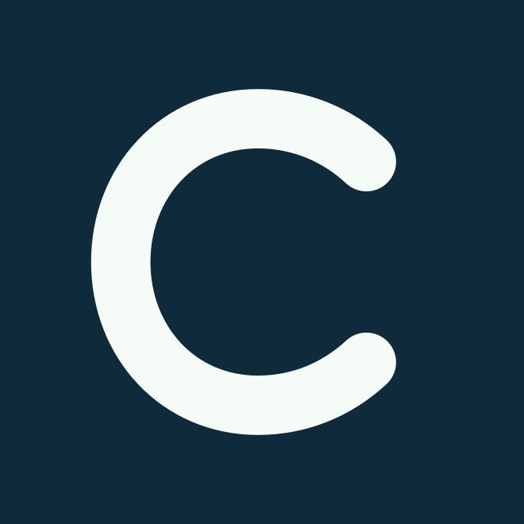

Tres formas de expresar pertenencia a la comunidad de comercios locales. Maquetas conceptuales: Google controla el tamaño, el orden y parte de la tipografía reales. Los ornamentos aquí viven en la imagen hero, no sobre el QR.

Dos trazos que se cruzan como vecinos, calles y comercios. El orgullo aparece como unión, sin simular una tarjeta bancaria.
La ruta más reconocible y cercana a la marca actual.
Lenguaje de sello editorial: tangible, humano y coleccionable. Tiene el encanto de un objeto querido, con una energía de barrio.
Más cálido y expresivo; el verde cambia más la identidad.
Una cartografía abstracta de recorridos y puntos de encuentro. Sugiere descubrimiento y movimiento entre comercios.
Más narrativa; pide cuidar que los nodos no parezcan datos en vivo.